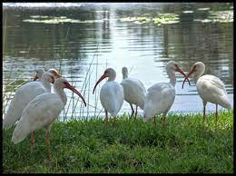
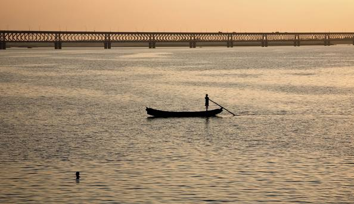
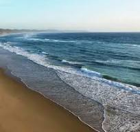

Kolleru Bird Sanctuary is a sanctuary in Andhra Pradesh, India. It covers 673 square kilometers. It was established in November 1999, under the Wildlife Protection Act of 1972. The sanctuary protects part of the Kolleru Lake wetland, which gained Ramsar Convention for International importance in 2002
The Godavari River, often referred to as the "Dakshina Ganga" or the "Ganges of the South," is one of India's most sacred and enchanting rivers. Flowing through the heartland of Andhra Pradesh, it weaves a beautiful story of culture, history, and spirituality that has captivated the people of the region for centuries.
i like it most.Perupalem Beach is located on the coast of Bay of Bengal in West Godavari district of the Indian state of Andhra Pradesh. The beach is being developed for tourism by the state tourism board,
